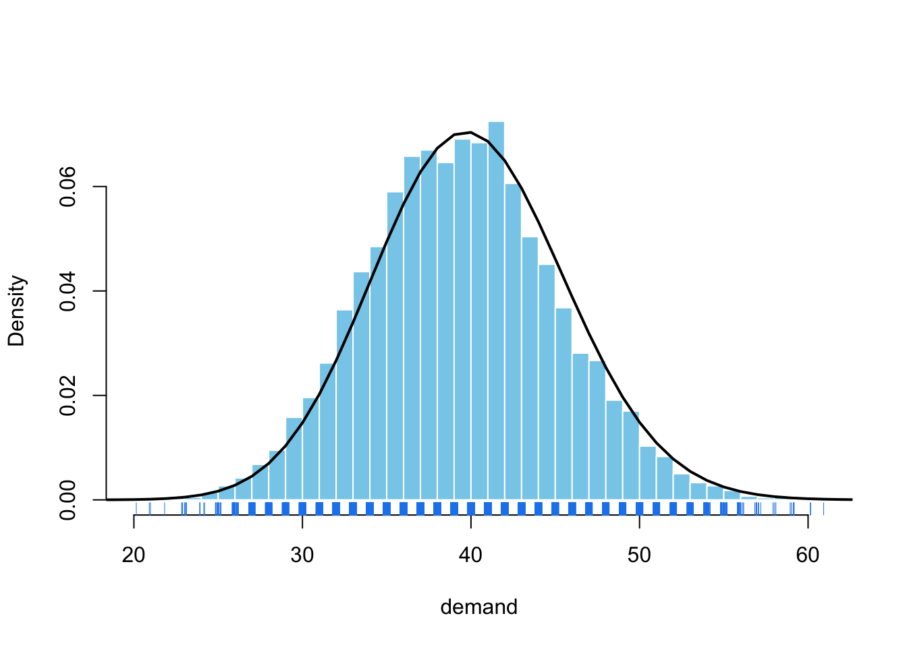
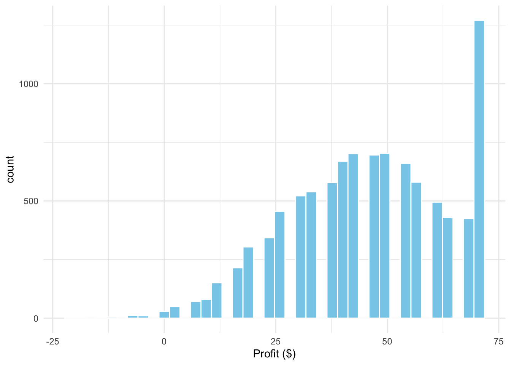
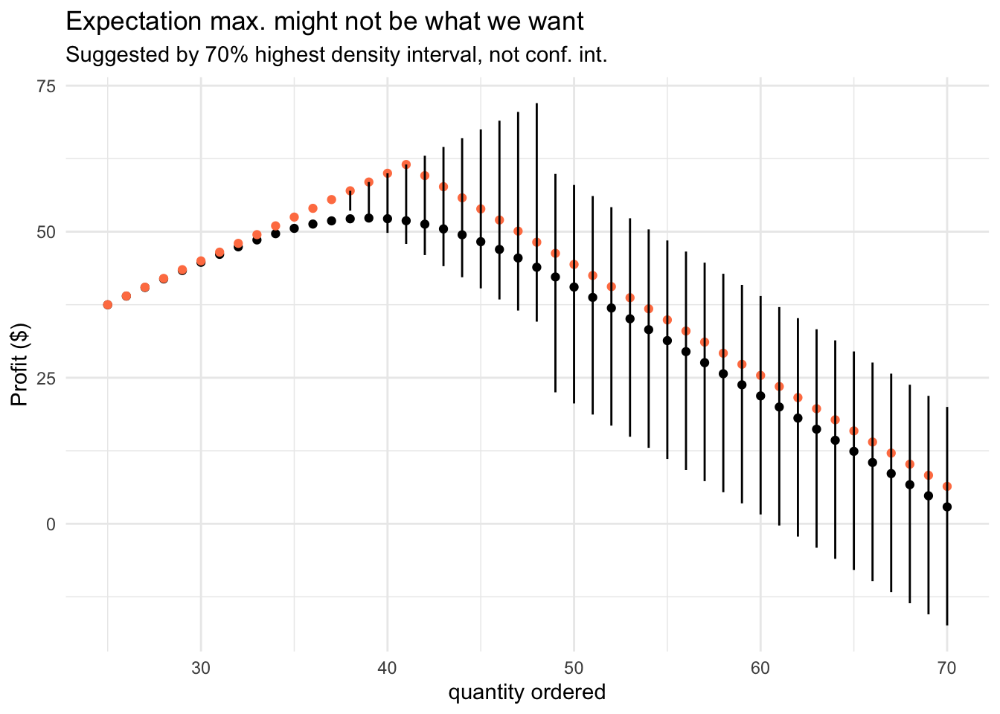
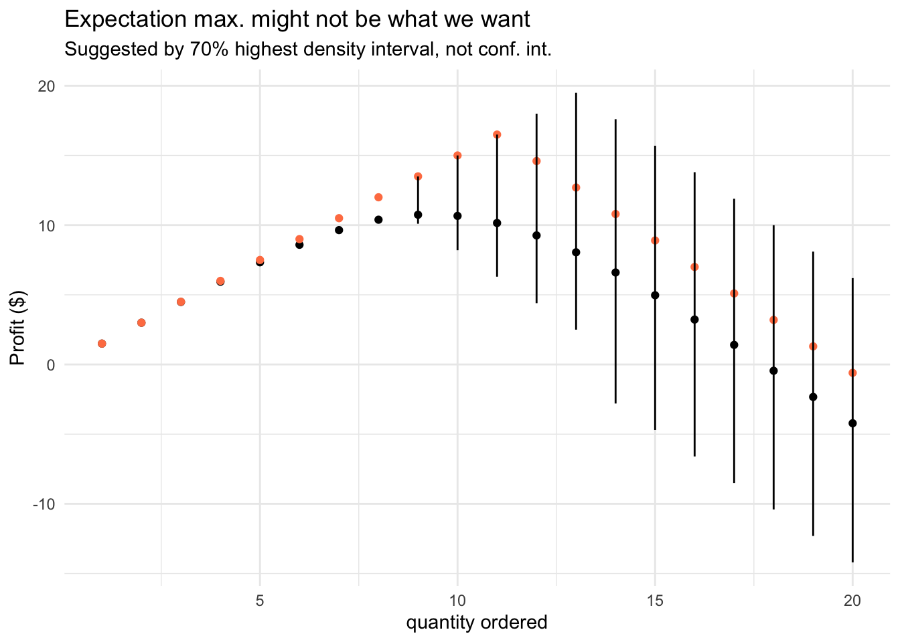
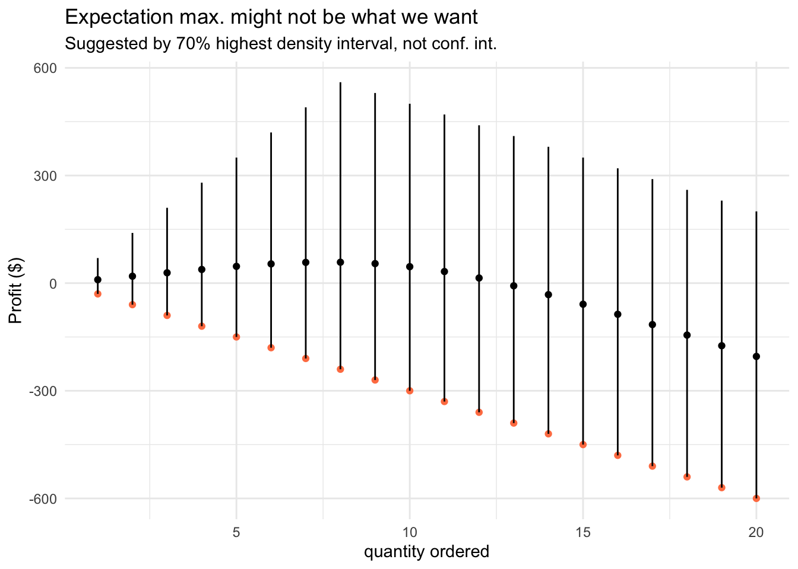
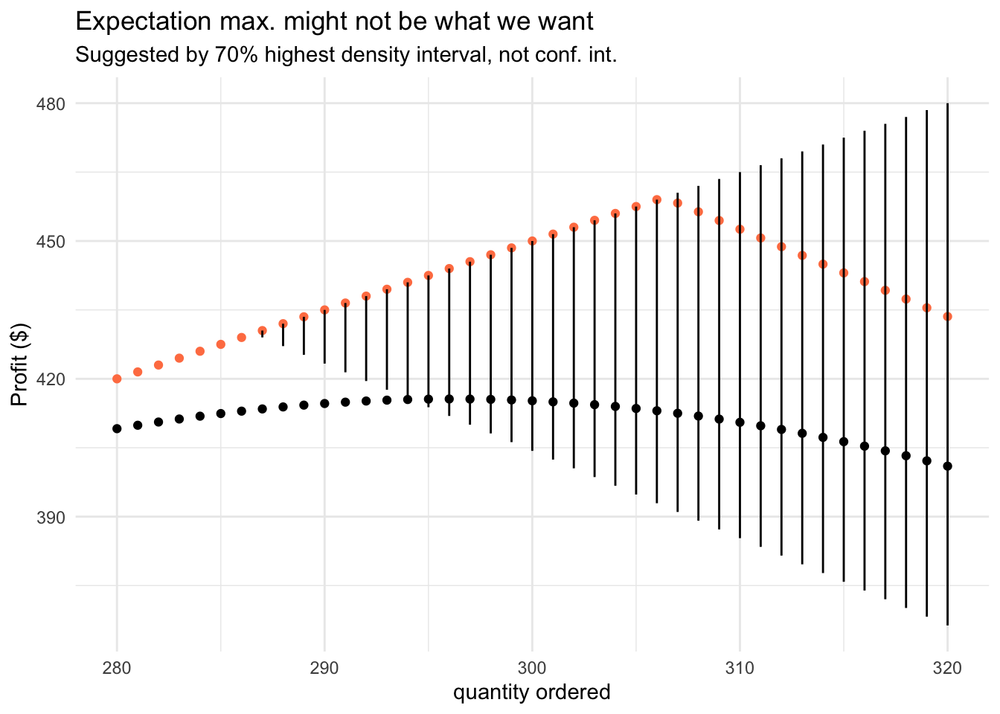

library(tidyverse)
library(coda)Newsvendor Problem
Inventory management under uncertainty
In the previous lectures and labs you learned the most important tools and concepts to successfully apply simulation in practical applications. Now we can confidently go back to the newsvendor problem I outlined in the introduction.
Imagine you’re in charge of a pastry shop and have to decide how much to produce (\(q\)) at unit cost \((c)\), which will be sold at price \((p)\). This is the simplest version of an inventory management problem, in which we optimize for a single perishable product, a single order period, assume no lead time or carrying costs.1 We’re also not concerned here with developing a model which generates reliable predictions and captures the uncertainty in the demand \((D)\) – we take its (predictive) distribution as given.
1 Of course, the challenges in reality get much more complicated, but there are well-established tools to tackle those
\[ (\max_q) \; p \cdot \mathbb{E}_D[\min(D, q)] - c \cdot q \]
If we order too much, we’ll have to throw away the unsold products, thus lose \(c_o = c\) per unit. If we order too little, we lose the opportunity to make \((c_u = p - c)\) in sales.2 We don’t have the opportunity to replenish inventory during the day, but in other applications it’s the right approach to take – order more when inventory falls bellow a threshold.
2 In reality, we might have substitute products and do clearance selling to attenuate both of these costs – which has to be modeled differently
Decisions under uncertainty
Without further ado and before we dive into a more mathematical analysis of this problem, let’s see how simulation can help us make a better decision. In the first version of the (demand) story, we have \(n\) people passing by our shop and each has a probability \(\theta\) to buy. This is entirely reasonable, except for assuming people buy independently or buy a single unit. Think about how would you take that into account in your simulation.
\[ D \sim Binom(n = 200, \theta = 0.2) \]
Code
dem <- rbinom(size = 200, n = 10000, prob = 0.2)
dem_dens <- dbinom(x = seq(1, 100, 1), size = 200, prob = 0.2)
dem |> hist(
xlab = "demand", probability = TRUE, breaks = 30,
col = "skyblue", border = "white", main = ""
)
lines(dem_dens, lwd = 2)
rug(jitter(dem), col = "dodgerblue2") 
Let’s say that in our neighborhood there are 200 people walking by our shop on Mondays, and each has a 20% chance to buy, as they really love the pastries. As you can see below, the story is more complicated than just deciding to produce the average \(\mathbb{E} = n \theta\).
First, notice that we can reasonably expect to sell between 30 and 50 units based on the distribution of demand. However, we need to simulate how this uncertainty translates into the distribution of profits for each quantity we might decide to produce.
set.seed(13753)
p <- 3.4; c <- 1.9; n <- 10000
sim_newsvendor <- function(p, c, qty_grid, demand) {
df_sim <- tibble(demand = demand) |>
mutate(nr_sim = row_number()) |>
crossing(qty = qty_grid) |>
mutate(
profit = p * pmin(demand, qty) - c * qty
)
df_sim
}
qty_grid <- 25:70
demand <- rbinom(n, 200, 0.2)
df_sim <- sim_newsvendor(p, c, qty_grid, demand) Show code
df_sim |> filter(qty == 47) |>
ggplot(aes(x = profit)) +
geom_histogram(bins = 40, fill = "skyblue", color = "white") +
labs(x = "Profit ($)") +
theme_minimal() 
As you can see on the margin, the distribution of profits might be highly skewed. A way to represent the uncertainty in this outcome is to use highest density intervals (coda::HDPinterval()), and not the classical, symmetric confindence or credible intervals.
Another direct consequence of the uncertainty in demand and assymmetry in the cost of errors we make (underbuy vs overbuy), is that we might want a service level (availability) greater than on average. This is why we also take into consideration the 60th quantile.
Show code for aggregation and visualization
visualize_profit <- function(df_sim, hdi = 0.7, upper_q = 0.6) {
df_sim |>
group_by(qty) |>
reframe(
avg_profit = mean(profit),
profit_upper = coda::HPDinterval(mcmc(profit), prob = hdi)[1],
profit_lower = coda::HPDinterval(mcmc(profit), prob = hdi)[2],
upper_profit = quantile(profit, probs = upper_q)
) |>
ggplot(aes(x = qty, y = avg_profit)) +
geom_point() +
geom_point(aes(y = upper_profit), color = "coral") +
geom_segment(aes(
y = profit_lower, yend = profit_upper,
x = qty, xend = qty
)) +
labs(
x = "quantity ordered", y = "Profit ($)",
title = "Expectation max. might not be what we want",
subtitle = "Suggested by 70% highest density interval, not conf. int."
) +
theme_minimal()
}
visualize_profit(df_sim)
This simulation tells us that we should be very careful when optimizing for average demand. By choosing a higher service level, we will have sufficient products to fully fulfill the demand on more Mondays. It makes total sense from the perspective of customer experience and you should get used to such reasoning when making decisions under uncertainty.3 You would miss all this nuance if you’re ignoring the stochastic nature of the demand and pretend that it’s deterministic, or even worse, constant.
3 This is where other aspects inform the decision, including the firm’s risk appetite
Next, let’s investigate what happens when we deal with a “slow-moving” item, meaning, we sell a low quantity. In this case, the Poisson distribution and its generalizations might be an appropriate choice for modeling counts.
\[ D \sim Pois(\lambda = 10) \] A useful tip in practice, when dealing with slow-moving products, is that you can use the Poisson distribution as a baseline against which you can benchmark more advanced models, which often won’t do much better.
qty_grid <- 1:20
demand <- rpois(n = n, lambda = 10)
df_sim_pois <- sim_newsvendor(p, c, qty_grid, demand)
visualize_profit(df_sim_pois) 
Sometimes, you have to model intermittent demand, where you will have periods in which you sell nothing. In an e-commerce or grocery store, these products might be not what we care about, but when we talk luxury items – it’s a feature, not a bug.
Once again, we can leverage the idea of a mixture model, in which we break down the demand into its occurrence and volume components. This idea was successfully used by I. Svetunkov to develop a cutting-edge time series model for forecasting intermittent demand.4
4 I. Svetunkov - “Forecasting and analytics with ADAM”, Chapter 13
\[ D \sim Bern(\theta) \cdot P(Y) \] Let’s take an example of a dish which requires expensive ingredients, like a fresh tuna steak. Here, the story is very different and we’re out of luck – it shouldn’t be surprising that we lose money in half of the days. Perisable products and intermittent demand is not a great business idea, unless there is another reason for having it.
qty_grid <- 1:20
demand <- rpois(n = n, lambda = 10) * rbinom(n = n, size = 1, prob = 0.4)
df_sim_tuna <- sim_newsvendor(p = 100, c = 30, qty_grid = qty_grid, demand = demand)
visualize_profit(df_sim_tuna) 
At last, we can look at fast-moving items, which sell a lot (stably) – like bread and milk in a supermarket. On the one hand we can predict the demand better, but we should also keep in mind that these products have a low gross margin.
qty_grid <- 280:320
demand <- rnorm(n = n, mean = 300, sd = 25)
df_sim_norm <- sim_newsvendor(p, c, qty_grid, demand)
visualize_profit(df_sim_norm) 
A Poisson Detour
I often hear the following statement, especially about probability theory: “I haven’t used Poisson outside university”. By now, you’re either aware that it’s important and wonder why it didn’t come up in practice or believe it was a tedious academic exercise.
The point is not about Poisson distribution, but about probability and statistics theory in general. First, let me assure you that it is helpful in practical applications. Poisson distribution and process can be a good choice to model counts of events per unit of time and space, with a large number of “trials”, each with a small probability of success.
\[ P(X=k) = \frac{e^{−\lambda} \lambda^k}{k!}; \space k=0, 1, ... \] Poisson distribution is often a building block in more complicated models (poisson regression, gamma-poisson, GLMs), which can be used in the following applications:
- Arrivals per hour: requests in a call center, arrivals at a restaurant, website visits. We can use it for capacity planning.
- Bankrupcies filed per month, mechanical piece failures per week, engine shutdowns, work-related accidents. We can use these insights to assess risk and improve safety.
- Forecasting slow-moving items in a retail store, e.g. for clothing
- A famous example by L. Bortkiewicz: in Prussian army there were 0.70 deaths per one corps per one year caused by horse kicks. Here is the historical data and a blog post telling the story of the “Law of small numbers”.
- Number of asthma or kindey cancer related deaths
Just before you get all excited about these applications, keep in mind that every distribution has a set of assumptions that have to be met. This is where knowing the theory makes a difference.